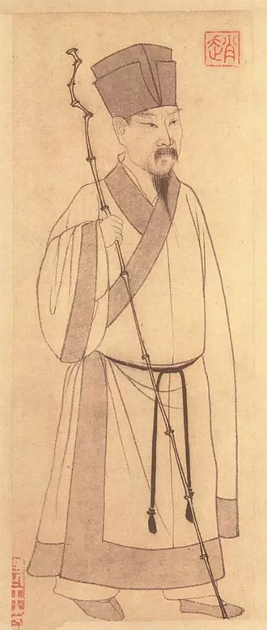

----- 水调歌头·明月几时有 | 念奴娇·赤壁怀古 | 江城子·密州出猎 -----
明月几时有？把酒问青天。不知天上宫阙，今夕是何年。我欲乘风归去，又恐琼楼玉宇，高处不胜寒。起舞弄清影，何似在人间？
转朱阁，低绮户，照无眠。不应有恨，何事长向别时圆？人有悲欢离合，月有阴晴圆缺，此事古难全。但愿人长久，千里共婵娟。
大江东去，浪淘尽，千古风流人物。故垒西边，人道是，三国周郎赤壁。乱石穿空，惊涛拍岸，卷起千堆雪。江山如画，一时多少豪杰。
遥想公瑾当年，小乔初嫁了，雄姿英发。羽扇纶巾，谈笑间，樯橹灰飞烟灭。故国神游，多情应笑我，早生华发。人生如梦，一尊还酹江月。
老夫聊发少年狂，左牵黄，右擎苍，锦帽貂裘，千骑卷平冈。为报倾城随太守，亲射虎，看孙郎。
酒酣胸胆尚开张，鬓微霜，又何妨！持节云中，何日遣冯唐？会挽雕弓如满月，西北望，射天狼。
© 版权所有 someone@263.net